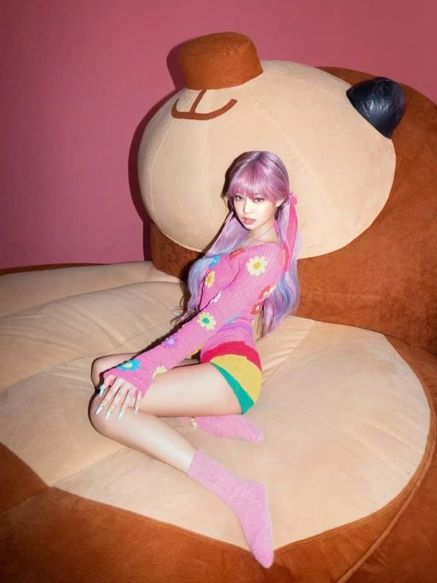

Group Information
BLACKPINK (블랙핑크) consists of 4 members: Jisoo, Jennie, Rosé, and Lisa. The band debuted on August 8th, 2016 under YG Entertainment. On October 23, 2018, BLACKPINK has officially signed with the U.S. label Interscope Records.
Why are they called BLACKPINK? Formed by YG Entertainment under the famous K-pop trainee system in South Korea, the members auditioned with the entertainment agency to become students or 'trainees' with the hope of one day making their debut as a recording artist. When Blackpink debuted, their label YG Entertainment said the name intends to convey that the group embodies more than beauty — there's a toughness, too.
BLACKPINK Fandom Name: BLINK
"The meaning of BLACKPINK aims to contradict the common perception of the color pink," the statement read. "Pink is commonly used to portray prettiness, but BLACKPINK actually means to say that 'Pretty isn’t everything.' It also symbolizes that they are a team that encompasses not only beauty, but also great talent."
Jisoo is undoubtedly the mood-maker of Blackpink. Her 4D personality gives her a unique demeanor within the group, and her quirkiness makes her a breath of fresh air. The Seoul-born lead vocalist trained for five years before debuting with Blackpink, and was the third member to be revealed. The oldest of the group, Jisoo is trilingual and can speak Korean, Japanese, and Chinese. However,she doesn't speak English because she's too shy to do so according to groupmate Jennie, but she can understand it just fine. So if you ever want to tell her how much she slays and you can't speak Korean, worry not. She loves trying different types of food, balancing things on her head, and being a free spirit.
Stage Name: Jisoo (지수)
Birth Name: Kim Jisoo (김지수)
Nicknames: Chi Choo, Jichu
Position: Lead Vocalist, Visual
Birthday: January 3, 1995
Zodiac Sign: Capricorn
Birthplace: Gunpo, Gyeonggi-do, South Korea
Height: 162 cm (5 ft 3¾ in)
Weight: 44 kg (97 lbs)
Blood Type: A
Jennie is Blackpink's rapper and she was the first member of the group to be revealed to the public. She can speak Korean, Japanese, and English fluently, and is known as the "YG Princess" — as well as "Human Gucci," thanks to her expensive taste. She's so popular that she released a solo track late last year, aptly titled "SOLO." And while Jisoo loves to eat, Jennie loves to cook, complementing her bandmate nicely. Despite being a fashion icon and a total badass on stage, she's big on aegyo (or, acting cute) and has a bubbly personality. Oh, and she loves dogs, which basically makes her a saint in our book. She has a white cocker spaniel named Kai and a brown pomeranian named Kuma.
Stage Name: Jennie (제니)
Birth Name: Kim Jennie (김제니)
Nicknames: NiNi, Jendeukie
Position: Main Rapper, Lead Vocalist
Birthday: January 16, 1996
Zodiac Sign: Capricorn
Birthplace: Cheongdam-dong, Seoul, South Korea
Height: 163 cm (5’4″)
Weight: 45 kg (99 lbs)
Blood Type: B
Rosé, is the honey-voiced main vocalist of Blackpink, and she was the final member of the group to be revealed. Born in Auckland, New Zealand, she was a cheerleader before making her debut with Blackpink. She has a unique, delicate voice and can play both piano and guitar. Interestingly, she's left-handed, and prefers to be called by her real name over any other nicknames or endearing pet titles. She can speak Korean, English, and Japanese — and "Blackpink's Goddess" can totally nail those high notes. She may be tiny, but her powerhouse vocals will knock you out.
Stage Name: Rosé (로제)
Birth Name: Park Chaeyoung (박채영)
English Name: Roseanne Park
Nicknames: Rose, Rosie, “Pasta”
Position: Main Vocalist, Lead Dancer
Birthday: February 11, 1997
Zodiac Sign: Aquarius
Birthplace: Auckland, New Zealand
Height: 168.7 cm (5’6”)
Weight: 44 kg (97 lbs)
Blood Type: B
The maknae (or youngest member) of the group, Lisa was actually born in Bangkok, Thailand and later moved to Korea. She was the second member of the group to be revealed, and speaks Korean, English, Japanese, Thai, and a little Chinese. Like a true maknae, she's extremely playful and mischievous, and she absolutely loves makeup. She was born Pranpriya Manoban, but her name was changed to Lalisa following a fortune telling session — the rest is history, since we know her as Lisa now. As the group's main dancer, her stage presence and charisma are unparalleled — and she's got seriously slick moves. As if she wasn't talented enough, she can even play ukulele.
Stage Name: Lisa (리사)
Birth Name: Lalisa Manoban (ลลิสา มโนบาล) / Pranpriya Manoban (ปราณปริยา มโนบาล)
Nicknames: Lili, Lalice, Laliz
Position: Main Dancer, Lead Rapper, Sub Vocalist, Maknae
Birthday: March 27, 1997
Zodiac Sign: Aries
Birthplace: Buriram, Thailand
Height: 166.5 cm (5’5.6″)
Weight: 44.7 kg (98.5 lbs)
Blood Type: O